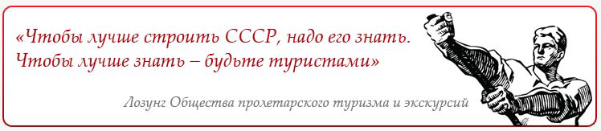
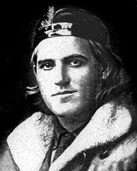
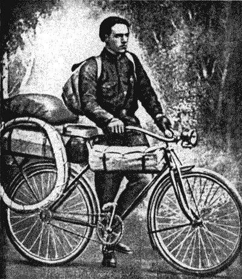
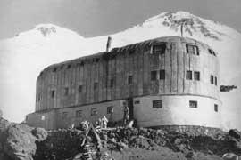

Путешествие Глеба Травина: один против всех стихий

Общество
пролетарского туризма и экскурсий, созданное в Советском Союзе в 1930 г., своей бурной деятельностью пробуждало интерес к самодеятельным путешествиям. В Центральный
совет общества со всех концов страны приходили известия об организации
туристскими ячейками ОПТЭ различных походов: лыжных, пешеходных, велосипедных,
на байдарках, на лошадях. Значительное число туристов-одиночек путешествовало
в начале 30-х гг. по стране. И среди множества этих путешествий особое место
занимает беспрецедентный, поистине героический одиночный поход, совершенный в
1928— 1831 гг. Глебом Травимым.
К
своему путешествию он шел не один год. В мае 1923 г. в его родной город Псков прибыл голландец Адольф де Грут, совершавший велопробег по маршруту
Антверпен — Германия — Скандинавские страны — через СССР в Персию — Африка —
Испания — Франция — Антверпен. С этого дня Глеб Травин навсегда заболел идеей
совершить исключительной трудности путешествие на велосипеде. Приобретя подержанную
машину и исколесив на ней окрестности Пскова, он начал думать о дальнем
путешествии по маршруту вдоль сухопутных и морских границ Советского Союза. Но
реализоваться этому плану было суждено только через несколько лет, после службы
Г. Травина в рядах Красной Армии. Демобилизовавшись из армии, он отправляется в
Петропавловск-Камчатский, где работает на строительстве первой камчатской
электростанции и ведет интенсивную подготовку к походу. Первую
многокилометровую поездку на велосипеде он совершает по Камчатке, после чего,
проверив свои силы, 10 октября 1928 г. отправляется на пароходе «Шан-си-Мару»
во Владивосток, откуда начинает свое легендарное путешествие.
Невероятные
трудности встретились на его пути. Холода Сибири, которую он преодолел зимой
1928—1929 гг., встретив Новый год западнее поселка Могочи в Читинской области,
жара Средней Азии летом 1929 г., безлюдье, жестокие морозы и пурга, полярная
ночь северного арктического побережья Советского Союза. Но никакие предложения
встретившихся ему людей остаться в теплом уютном жилье ни на один день не
приостановили выполнения заветной мечты.
«В
чем я находил радость во время своего путешествия? Прежде всего в самом
движении к намеченной цели. Каждый день я держал экзамен. Выдержал — остался
жив. Провал означал смерть. Как бы ни было мне тяжело, настраивал себя на то,
что самое трудное еще впереди. Преодолев опасность, я испытывал огромную
радость от сознания, что стал еще на шаг ближе к цели. Радость приходила вслед
за опасностью, как прилив за отливом. Это была первозданная радость бытия,
радость от сознания раскрепощенности своих сил» (Травин, 1975).
И
все это не ради славы, не ради каких-то личных выгод. Только ради познания
самого себя, ради желания увидеть мир во всех его красках, во всем его разнообразии.
Ведь за все время путешествия Глеба Травина ни в одной газете не было сообщения
о его беспримерном спортивном подвиге.
Совершить его мог
только очень организованный человек, стремящийся преодолеть невозможное.
Распорядок дня оставался неизменным все три года путешествия: 8-12 часов хода
каждые сутки, прием пищи два раза — утром и вечером. Даже на севере соблюдался
столь строгий режим. Трудно себе это представить, но вот несколько строк из
его воспоминаний:
«Я
уже знал, как ни сурова зима в прибрежных арктических льдах, жизнь там
полностью не замирает. От сильных морозов во льду образуются трещины. Каждая
такая трещина дает о себе знать ощутимым гулом. Вместе с водой в эту трещину
устремляется рыба. Позже я наловчился ловить ее крюком из велосипедной спицы.
На день мне хватало две рыбы. Одну я съедал свежей, другую — мороженой, как
строганину.
Кроме
рыбы, в мое меню входило сырое мясо. У местных охотников я научился
выслеживать и стрелять северного зверя — песца, тюленя, моржа, оленя, белого
медведя. Я принимал пищу дважды в сутки — в 6 часов утра и 6 вечера, 8 часов
ежедневно уходило на дорогу, 8 часов — на сон, остальное время — на поиск пищи,
устройство ночлега, дневниковые записи».
В тайге, Арктике, в
пустыне он не раз попадал в экстремальные ситуации. Со многим ему приходилось
сталкиваться впервые и принимать единственно правильное решение. Долго
преследовал его ужас от встречи с коброй в Средней Азии:
«Я
ехал по одному из ущельев при сильном попутном ветре. Смеркалось. Зажег
масляный фонарь, надеясь проскочить ущелье до наступления полной темноты. И
вдруг передо мной мелькнул свет. Я нажал на тормоз, спрыгнул и замер от
неожиданности. В метре от переднего колеса стояла на хвосте кобра. Распустив
капюшон, она раскачивала головой. В ее глазах отражался свет масляного фонаря.
Я
медленно попятился назад и тут только заметил, что на стенах ущелья — клубки
свившихся змей. Парализованный страхом, я двигался как в замедленной съемке и
не спускал глаз с кобры. Она стояла навытяжку передо мной, словно часовой. Я
сделал еще несколько шагов назад, каждый из которых мог оказаться для меня
смертельным. Кобра не шелохнулась. Тогда я осторожно развернул велосипед и сел
на него, обливаясь холодных потом. Ноги нажимали на педали изо всех сил, а мне
казалось, что велосипед прирос к земле...»

Особые
опасности приготовил для Травина север. Недалеко от Новой Земли он ночью вмерз
в лед: из трещины выступила вода и замерзла вместе со снегом, который укрывал
спящего велосипедиста. В Большеземельской тундре на него напал песец. Переезжая
в октябре 1930 г. реку Пясину на Таймырском полуострове, Г. Травин провалился
под лед, и только большая физическая сила и воля к жизни помогли ему выбраться
из полыньи и доползти до берега. Но все эти препятствия на пределе человеческих
возможностей не заставили Травина отступить от цели.
«...С
волосами ниже плеч ( Травин дал обет не стричь волосы, пока не закончит
путешествие), бородатый, со шрамами ознобов на лице, с негнущимися руками, едва
переступая ногами, на которых сам отрезал ножом обмороженные пальцы, Травин
предстал в моем воображении живым Амундсеном.
Он
пробыл у меня всего три дня.
Эти
три дня — большая книга, которую я никогда не читал. Сколько рассказов! У него
есть портативный альбом, где росписями и печатями заверены населенные пункты, в
которых он побывал.
На
теле путешественника надет пояс с медными буквами: «Глеб Леонтьевич Травин».
Это для того, говорил он, чтобы опознали в случае смерти.
Ни
бахвальства, ни героики, ни помпезности, ни нытья и жалоб. И какая скромность!
Кроме сотни пуль, десятка плиток шоколада и сухого печенья, Глеб Леонтьевич
ничего не взял!
И
все перекрыла идеальная честность. Как я предлагал ему на прекрасных
скакунах-оленях домчать его хоть до Дудинки до любого пункта по его маршруту!
Как я упрашивал его взять пару смирных выносливых оленей. Все было тщетно! Даже
не отдохнув как следует, не залечив ознобов, он пристегнул рюкзак и уехал,
использовав очень короткий кусок торной дороги», - так вспоминал о встрече в таймырской
тундре заведующий факторией С. А, Баранкин.
16
июля 1931 г. Глеб Травин достиг крайней восточной точки Советского Союза — мыса
Дежнева, а 3 октября закончил свой маршрут протяженностью в 85 тыс. км в бухте
Провидения, откуда на пароходе «Арика» отправился в Петропавловск-Камчатский.
24
октября 1931 г. в паспорте-регистраторе Г. Травина поставлена
отметка: «Петропавловск-Камчатский. Камчатский окружной исполнительный комитет»
— последняя из двухсот пятидесяти пяти.
На
всем маршруте путешествия Г. Травин многократно встречался с жителями городов
и поселков, охотниками севера, с командами кораблей «Ленин», «Володарский»,
«Малыгин», работавшими в морях Северного Ледовитого океана. Он рассказывал им о
своем путешествии, популяризировал спорт и велотуризм, сложил печь в медпункте
поселка Хабарово у пролива Югорский Шар, давал уроки географии школьникам
вместо отсутствовавшей учительницы в Русском Устье — старом русском поселении
на Индигирке, с жителями этого селения участвовал в ликвидации банды, которой
руководил бывший белогвардейский офицер, выдававший себя за шамана,
ремонтировал радиомачту в Уэлене — всюду он оставлял добрую память о себе.
И
в честь его путешествия молодежь Уэлена на высокой сопке вблизи поселка
установила чугунную станину, в основании которой вмонтировала гильзу от снаряда
с запиской о пробеге. На гильзе выбили: «СССР, Турист — путешественник на
велосипеде Глеб Травин. 12.VII.1931».
После
окончания путешествия Г. Травин долгое время жил на Камчатке, участвовал в
организации спортивной и туристской работы, тренировал велосипедистов,
мотоциклистов, автомобилистов, возглавлял восхождения на вершины вулканов,
лыжные переходы по тундре, плавания на парусниках. В годы Великой
Отечественной войны он командовал полком береговой обороны, затем работал
заместителем директора мореходного училища.
Уйдя
на пенсию, Глеб Леонтьевич поселился в своем родном городе Пскове. В
объединенном историко-архитектурном и художественном музее-заповеднике города
хранится велосипед и другое туристское снаряжение Г. Л. Травина.
А.А.
Харитановский написал о Травине книгу «Человек с железным оленем», в которой
рассказывается о его беспримерном туристском подвиге.
Строительство «Приюта 11»

«Приют 11» на склоне Эльбруса уникальная высокогорная гостиница для путешественников
Эльбрус
всегда привлекал горовосходителей как наших соотечественников, так и стран
Западной Европы. Ведь это самая высокая из ближайших гор от европейских центров
альпинизма.
Для
облечения восхождения на Эльбрус Обществом пролетарского туризма и экскурсий
было решено на его юго-восточном склоне на высоте 4200 м над уровнем моря построить гостиницу. И первое деревянное здание гостиницы, получившее
название «Приюта 11», сдали в эксплуатацию уже в 1932 г. Через шесть лет вместо прежнего здания было возведено трехэтажное, простоявшее 60 лет. Новый
«Приют 11» построили за один сезон с помощью местного населения, поднимавшего
стройматериалы к месту строительства, где с ними расплачивались за каждый
килограмм поднятого груза.
В
«Приюте 11» первый этаж был отдан альпинистам, на втором располагались инструкторы
и спасатели, на третьем - ученые.
16
августа 1998 г. из-за нарушений правил пожарной безопасности «Приют 11» сгорел.
В 2001 г. первых горовосходителей принял новый небольшой приют, построенный на месте старой дизельной
станции, обслуживающей «Приют 11».
В
настоящее время остатки сгоревшего здания полностью разобраны и на его месте
возводится удобное для жизни путешественников капитальное строение.